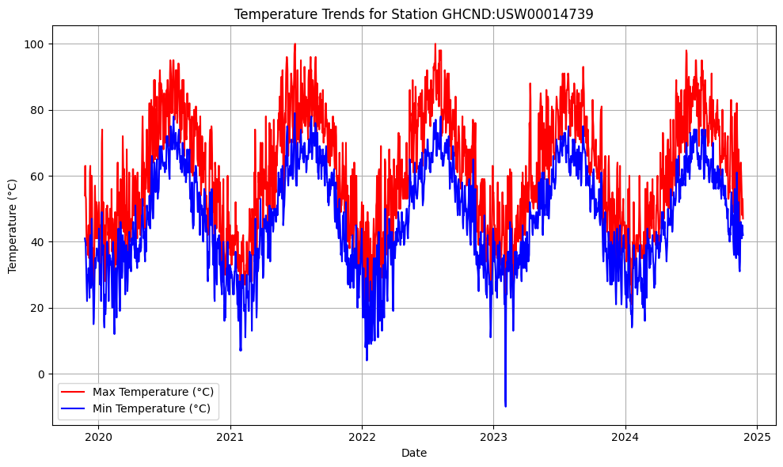
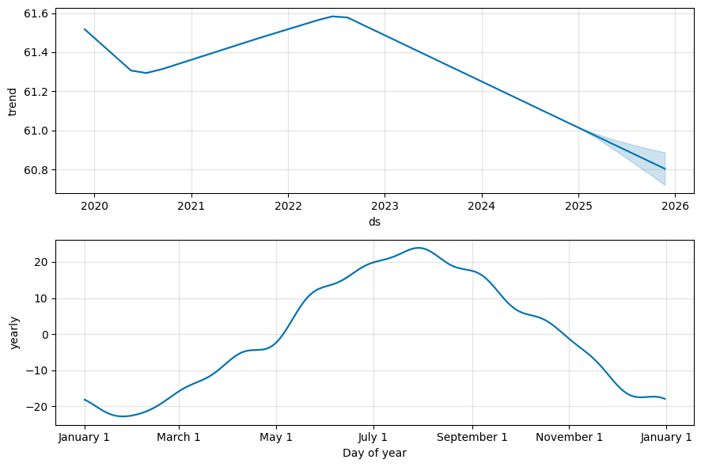

from dataclasses import dataclass
from datetime import datetime
from datetime import timedelta
from dateutil.relativedelta import relativedelta
import pandas as pd
import requests
import matplotlib.pyplot as plt
@dataclass
class GHCNDStationTemps:
token: str
stationid: str
end_date: datetime = datetime.now() - timedelta(days=1)
years_of_history: int = 5
endpoint: str = "https://www.ncdc.noaa.gov/cdo-web/api/v2/data"
_data = None
def _fetch_data(self):
if self.end_date is None:
self.end_date = datetime.now() - timedelta(days=1)
start_date = self.end_date - relativedelta(years=self.years_of_history)
current_date = start_date
all_data = []
while current_date < self.end_date:
chunk_end = min(current_date + relativedelta(years=1) - timedelta(days=1), self.end_date)
params = {
"datasetid": "GHCND",
"stationid": self.stationid,
"datatypeid": "TMAX,TMIN",
"units": "standard",
"startdate": current_date.strftime("%Y-%m-%d"),
"enddate": chunk_end.strftime("%Y-%m-%d"),
"limit": 1000,
}
print(f"Fetching data from {current_date.date()} to {chunk_end.date()}...")
response = requests.get(self.endpoint, headers={"token": self.token}, params=params)
response.raise_for_status()
data = response.json()
if "results" in data:
all_data.extend(data["results"])
print(f"Retrieved {len(data['results'])} records.")
else:
print(f"No data found for {current_date.date()} to {chunk_end.date()}.")
current_date = chunk_end + timedelta(days=1)
return all_data
@property
def data(self):
if self._data is None:
print("Data is empty. Fetching and converting data...")
raw_data = self._fetch_data()
self._data = self._convert_to_dataframe(raw_data)
return self._data
@staticmethod
def _convert_to_dataframe(all_data):
"""
Convert raw data into a pandas DataFrame with 'Date', 'TMAX', and 'TMIN' columns.
"""
# Convert to DataFrame and handle missing keys/values (e.g., NaN)
df = pd.DataFrame(all_data)
# Explicitly keep only the required columns
columns_to_keep = ['date', 'datatype', 'value']
if not all(col in df.columns for col in columns_to_keep):
raise ValueError(f"Input data must contain these columns: {columns_to_keep}")
df = df[columns_to_keep]
# Pivot the table to get 'datatype' values as columns
df_pivot = df.pivot(index='date', columns='datatype', values='value')
# Remove the MultiIndex column formatting by renaming or flattening
df_pivot.columns.name = None
df_pivot = df_pivot.reset_index()
# Convert 'date' column to datetime.date type
df_pivot['date'] = pd.to_datetime(df_pivot['date']).dt.date
# Rename columns for better readability
df_pivot.rename(columns={'TMAX': 'Max Temperature (°C)',
'TMIN': 'Min Temperature (°C)',
'date': 'Date'},
inplace=True)
return df_pivot
def plot_temperatures(self):
if self.data is None or self.data.empty:
print("No data available to plot.")
return
plt.figure(figsize=(10, 6))
plt.plot(self.data['Date'], self.data['Max Temperature (°C)'], label='Max Temperature (°C)', color='red')
plt.plot(self.data['Date'], self.data['Min Temperature (°C)'], label='Min Temperature (°C)', color='blue')
plt.xlabel('Date')
plt.ylabel('Temperature (°C)')
plt.title(f'Temperature Trends for Station {self.stationid}')
plt.legend()
plt.grid(True)
plt.tight_layout()
plt.show()
import requests
import os
from dotenv import load_dotenv
load_dotenv()
noaa_token = os.getenv("NOAA_TOKEN")
stationid = "GHCND:USW00014739"
ghcnd = GHCNDStationTemps(noaa_token, stationid)
ghcnd.data
Data is empty. Fetching and converting data...
Fetching data from 2019-11-25 to 2020-11-24...
---------------------------------------------------------------------------
KeyboardInterrupt Traceback (most recent call last)
Cell In[3], line 1
----> 1 ghcnd.data
Cell In[1], line 58, in GHCNDStationTemps.data(self)
56 if self._data is None:
57 print("Data is empty. Fetching and converting data...")
---> 58 raw_data = self._fetch_data()
59 self._data = self._convert_to_dataframe(raw_data)
60 return self._data
Cell In[1], line 39, in GHCNDStationTemps._fetch_data(self)
28 params = {
29 "datasetid": "GHCND",
30 "stationid": self.stationid,
(...)
35 "limit": 1000,
36 }
38 print(f"Fetching data from {current_date.date()} to {chunk_end.date()}...")
---> 39 response = requests.get(self.endpoint, headers={"token": self.token}, params=params)
40 response.raise_for_status()
42 data = response.json()
File /usr/local/lib/python3.12/site-packages/requests/api.py:73, in get(url, params, **kwargs)
62 def get(url, params=None, **kwargs):
63 r"""Sends a GET request.
64
65 :param url: URL for the new :class:`Request` object.
(...)
70 :rtype: requests.Response
71 """
---> 73 return request("get", url, params=params, **kwargs)
File /usr/local/lib/python3.12/site-packages/requests/api.py:59, in request(method, url, **kwargs)
55 # By using the 'with' statement we are sure the session is closed, thus we
56 # avoid leaving sockets open which can trigger a ResourceWarning in some
57 # cases, and look like a memory leak in others.
58 with sessions.Session() as session:
---> 59 return session.request(method=method, url=url, **kwargs)
File /usr/local/lib/python3.12/site-packages/requests/sessions.py:589, in Session.request(self, method, url, params, data, headers, cookies, files, auth, timeout, allow_redirects, proxies, hooks, stream, verify, cert, json)
584 send_kwargs = {
585 "timeout": timeout,
586 "allow_redirects": allow_redirects,
587 }
588 send_kwargs.update(settings)
--> 589 resp = self.send(prep, **send_kwargs)
591 return resp
File /usr/local/lib/python3.12/site-packages/requests/sessions.py:703, in Session.send(self, request, **kwargs)
700 start = preferred_clock()
702 # Send the request
--> 703 r = adapter.send(request, **kwargs)
705 # Total elapsed time of the request (approximately)
706 elapsed = preferred_clock() - start
File /usr/local/lib/python3.12/site-packages/requests/adapters.py:667, in HTTPAdapter.send(self, request, stream, timeout, verify, cert, proxies)
664 timeout = TimeoutSauce(connect=timeout, read=timeout)
666 try:
--> 667 resp = conn.urlopen(
668 method=request.method,
669 url=url,
670 body=request.body,
671 headers=request.headers,
672 redirect=False,
673 assert_same_host=False,
674 preload_content=False,
675 decode_content=False,
676 retries=self.max_retries,
677 timeout=timeout,
678 chunked=chunked,
679 )
681 except (ProtocolError, OSError) as err:
682 raise ConnectionError(err, request=request)
File /usr/local/lib/python3.12/site-packages/urllib3/connectionpool.py:789, in HTTPConnectionPool.urlopen(self, method, url, body, headers, retries, redirect, assert_same_host, timeout, pool_timeout, release_conn, chunked, body_pos, preload_content, decode_content, **response_kw)
786 response_conn = conn if not release_conn else None
788 # Make the request on the HTTPConnection object
--> 789 response = self._make_request(
790 conn,
791 method,
792 url,
793 timeout=timeout_obj,
794 body=body,
795 headers=headers,
796 chunked=chunked,
797 retries=retries,
798 response_conn=response_conn,
799 preload_content=preload_content,
800 decode_content=decode_content,
801 **response_kw,
802 )
804 # Everything went great!
805 clean_exit = True
File /usr/local/lib/python3.12/site-packages/urllib3/connectionpool.py:536, in HTTPConnectionPool._make_request(self, conn, method, url, body, headers, retries, timeout, chunked, response_conn, preload_content, decode_content, enforce_content_length)
534 # Receive the response from the server
535 try:
--> 536 response = conn.getresponse()
537 except (BaseSSLError, OSError) as e:
538 self._raise_timeout(err=e, url=url, timeout_value=read_timeout)
File /usr/local/lib/python3.12/site-packages/urllib3/connection.py:507, in HTTPConnection.getresponse(self)
504 from .response import HTTPResponse
506 # Get the response from http.client.HTTPConnection
--> 507 httplib_response = super().getresponse()
509 try:
510 assert_header_parsing(httplib_response.msg)
File /usr/local/lib/python3.12/http/client.py:1428, in HTTPConnection.getresponse(self)
1426 try:
1427 try:
-> 1428 response.begin()
1429 except ConnectionError:
1430 self.close()
File /usr/local/lib/python3.12/http/client.py:331, in HTTPResponse.begin(self)
329 # read until we get a non-100 response
330 while True:
--> 331 version, status, reason = self._read_status()
332 if status != CONTINUE:
333 break
File /usr/local/lib/python3.12/http/client.py:292, in HTTPResponse._read_status(self)
291 def _read_status(self):
--> 292 line = str(self.fp.readline(_MAXLINE + 1), "iso-8859-1")
293 if len(line) > _MAXLINE:
294 raise LineTooLong("status line")
File /usr/local/lib/python3.12/socket.py:720, in SocketIO.readinto(self, b)
718 while True:
719 try:
--> 720 return self._sock.recv_into(b)
721 except timeout:
722 self._timeout_occurred = True
File /usr/local/lib/python3.12/ssl.py:1251, in SSLSocket.recv_into(self, buffer, nbytes, flags)
1247 if flags != 0:
1248 raise ValueError(
1249 "non-zero flags not allowed in calls to recv_into() on %s" %
1250 self.__class__)
-> 1251 return self.read(nbytes, buffer)
1252 else:
1253 return super().recv_into(buffer, nbytes, flags)
File /usr/local/lib/python3.12/ssl.py:1103, in SSLSocket.read(self, len, buffer)
1101 try:
1102 if buffer is not None:
-> 1103 return self._sslobj.read(len, buffer)
1104 else:
1105 return self._sslobj.read(len)
KeyboardInterrupt:
ghcnd.plot_temperatures()

import pandas as pd
from prophet import Prophet
import matplotlib.pyplot as plt
df = ghcnd.data
df_prophet = df.rename(columns={'Date': 'ds', 'Max Temperature (°C)': 'y'})
model = Prophet(
yearly_seasonality=True, # Enable yearly seasonality
daily_seasonality=False, # Disable daily seasonality unless needed
weekly_seasonality=False # Disable weekly seasonality unless needed
)
# Fit the model
model.fit(df_prophet)
# Create a dataframe for future dates
future = model.make_future_dataframe(periods=365) # Forecast for the next 30 days
# Predict future values
forecast = model.predict(future)
04:59:02 - cmdstanpy - INFO - Chain [1] start processing
04:59:02 - cmdstanpy - INFO - Chain [1] done processing
# Plot the forecast
fig = model.plot(forecast)
plt.title('Prophet Temperature Forecast')
plt.xlabel('Date')
plt.ylabel('Temperature')
plt.show()

# Plot the forecast components
fig2 = model.plot_components(forecast)
plt.show()

from prophet.diagnostics import cross_validation, performance_metrics
# Perform cross-validation
cv_results = cross_validation(model, initial='730 days', period='180 days', horizon='365 days')
# Compute performance metrics
metrics = performance_metrics(cv_results)
print(metrics)
0%| | 0/5 [00:00<?, ?it/s]
04:57:29 - cmdstanpy - INFO - Chain [1] start processing
04:57:29 - cmdstanpy - INFO - Chain [1] done processing
04:57:29 - cmdstanpy - INFO - Chain [1] start processing
04:57:29 - cmdstanpy - INFO - Chain [1] done processing
40%|████ | 2/5 [00:00<00:00, 12.75it/s]04:57:29 - cmdstanpy - INFO - Chain [1] start processing
04:57:29 - cmdstanpy - INFO - Chain [1] done processing
04:57:29 - cmdstanpy - INFO - Chain [1] start processing
04:57:29 - cmdstanpy - INFO - Chain [1] done processing
80%|████████ | 4/5 [00:00<00:00, 12.15it/s]04:57:29 - cmdstanpy - INFO - Chain [1] start processing
04:57:29 - cmdstanpy - INFO - Chain [1] done processing
100%|██████████| 5/5 [00:00<00:00, 12.20it/s]
horizon mse rmse mae mape mdape smape \
0 37 days 83.300660 9.126920 7.061131 0.139026 0.092977 0.133784
1 38 days 83.223010 9.122665 7.020666 0.141912 0.091900 0.134840
2 39 days 82.234627 9.068331 6.974539 0.140858 0.089042 0.133747
3 40 days 81.721575 9.039999 6.945341 0.139965 0.080039 0.132869
4 41 days 80.818660 8.989920 6.871765 0.138103 0.080039 0.131166
.. ... ... ... ... ... ... ...
324 361 days 103.238184 10.160619 8.516418 0.142192 0.134711 0.140493
325 362 days 104.051076 10.200543 8.565883 0.142703 0.133370 0.141046
326 363 days 103.315722 10.164434 8.493252 0.141465 0.132539 0.139903
327 364 days 104.398590 10.217563 8.579239 0.142999 0.133370 0.141518
328 365 days 104.972736 10.245620 8.614547 0.144098 0.133370 0.142437
coverage
0 0.768132
1 0.775824
2 0.780220
3 0.783516
4 0.789011
.. ...
324 0.697802
325 0.692308
326 0.692308
327 0.686813
328 0.681319
[329 rows x 8 columns]